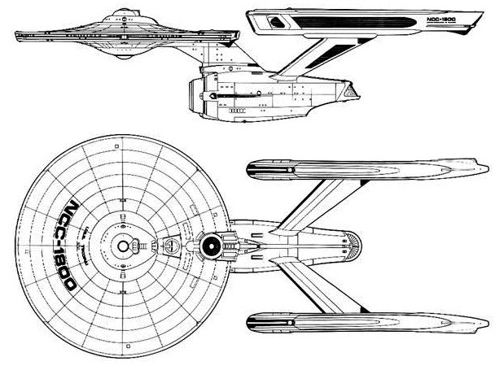

Constitution Refit-class Heavy Cruiser (UFP)

Battle Stats
Engines and Superstructure
Total Power Units - 60 (Warp Drive - 2x26, Impulse - 8)
MPR - 4/1
Superstructure - 26
Maximum Warp - 2
Industry Points to Build - 6
Beam Weapons (Phasers)
Max Power - 10
Firing Chart - Y
Arcs - 2f, 2f/p, 2f/s
Bonuses - +3(1-10) +2(11-17) +1(18-20)
Missile Weapons (Photon Torpedoes)
Power to Arm - 1
Damage - 20
Firing Chart - S
Arcs - 2F
Deflector Shields
Max Shield Power - 16
SPR - 1/4